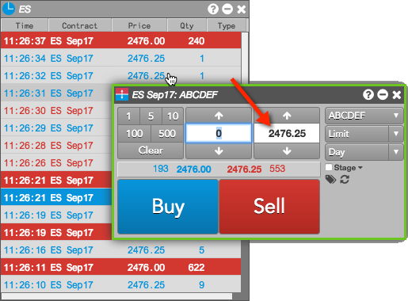

You can enter orders for instruments displayed in Time and Sales by enabling Launch floating order entry on left click on price or quantity in the widget settings. Click the price or quantity for a trade displayed in Time and Sales to open the floating order entry widget of your choice seeded with either the price or quantity that you selected, and configure and submit the order.
To enter orders from Time and Sales:
The floating order entry widget opens seeded with the selected price or quantity.
